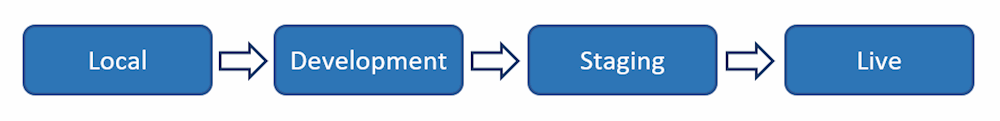

Despliegue de aplicaciones web
¿Qué es el despliegue de aplicaciones web?
El despliegue en el desarrollo de software y web significa pasar los cambios o actualizaciones de un entorno de funcionamiento a otro. Al configurar un sitio web, siempre se tendrá el sitio web en vivo, que se llama el entorno en vivo o entorno de producción.
Si se quiere tener la capacidad de hacer cambios sin afectar a un sitio web en producción, se puede (y se debe) añadir entornos adicionales. Estos entornos se llaman entornos de desarrollo o entornos de despliegue. Los entornos de desarrollo adicionales suelen ser un entorno local, un entorno de desarrollo y un entorno de preparación o preproducción. El número de entornos que se necesitan depende de cada caso y de la complejidad del proyecto en el que se esté trabajando.
Aunque los modelos de despliegue pueden variar, el más común es el clásico modelo de despliegue "de izquierda a derecha" cuando se trabaja con múltiples entornos de despliegue. En este modelo, los cambios se realizan en entornos locales, de desarrollo o de preparación (dependiendo de la configuración) y se van pasando de izquierda a derecha a través de los diferentes entornos, terminando en el de producción.
Una vez completado este proceso de despliegue, los nuevos cambios serán visibles en el entorno activo.

En la imagen anterior se muestra una forma muy simplificada y clásica de manejar los despliegues cuando se trabaja con sitios web. No necesariamente se necesitan todos los entornos anteriores, pero el proceso sigue siendo el mismo.
Al utilizar múltiples entornos se obtiene una lista de ventajas; la principal es que se pueden hacer cambios sin que afecten a su sitio web en vivo. Una vez que los cambios se hacen, se prueban y están listos para ser pasados a producción, el proceso de despliegue se encarga del resto.
¿De qué pasos consta el proceso despliegue?
El flujo del proceso de despliegue consta de 5 pasos: Planificación, desarrollo, pruebas, despliegue y supervisión.
A continuación nos adentraremos en cada uno de los 5 pasos, pero antes una nota rápida.
El flujo del proceso de despliegue que aparece a continuación cubre los aspectos básicos, que se dividen en 5 pasos. Esto no significa que sea la única manera de hacerlo. Podría haber un proceso mejor para cada caso. Es una simplificación para cubrir las partes más importantes.
-
Recordar tener un plan de despliegue de software
Para asegurarse de que el proceso de despliegue se desarrolle con la mayor fluidez posible, lo mejor es tener un plan de despliegue que se siga en todo momento. Al tener un plan nos aseguramos de que todo se haga de la misma manera cada vez que se realicen cambios. Esto es especialmente útil cuando varios usuarios trabajan en el mismo proyecto.
Un plan de despliegue debe incluir reglas sobre cuándo desplegar desde los entornos locales a los sitios de desarrollo o de pre-producción, así como horarios para cuando los nuevos cambios pueden ir a un entorno de producción. Al tener un plan establecido, se reduce el riesgo de conflictos entre los diferentes cambios y se asegura que el proceso de despliegue sea lo más fácil y fluido posible. Si se está trabajando en un proyecto de código abierto, también da la oportunidad de hacer Release Candidates y dejar que la comunidad lo pruebe para detectar cualquier error que se pueda haber pasado por alto.
Además de un plan general, también es importante planificar cada uno de los cambios que se vaya a realizar. Este proceso será muy rápido para los cambios menores, pero debería ser mucho más extenso para los grandes cambios. Si se planifica con mucha antelación, se estará mucho más preparado para tener un proceso de despliegue sin problemas.
-
El desarrollo propiamente dicho
Una vez que se tenga el plan en marcha, es el momento de realizar el desarrollo real. Para garantizar que cualquier desarrollo pueda realizarse simultáneamente y sin romper nada, es importante trabajar únicamente en entornos locales o de desarrollo. Una vez que el proceso de desarrollo está hecho, es el momento de empezar a probar y desplegar los cambios a través de la configuración de su entorno.
-
Probar los cambios
Probar los cambios es crucial para garantizar que no haya errores en el entorno de producción final. Pero las pruebas no pueden completarse sin desplegar los cambios en nuevos entornos.
Una vez que se haya comprobado que todos los cambios funcionan en el entorno local o de desarrollo, es el momento de desplegar los cambios en el siguiente entorno. Esto debe hacerse hasta el entorno de preproducción, donde se deben realizar las pruebas finales de control de calidad. Si todo está correctamente probado y funciona en un entorno parecido al entorno real, es el momento de desplegarlo en producción.
Si se descubren errores por el camino en cualquier entorno, es importante tener un plan para manejarlos. Por lo general, cualquier cambio que no pase las pruebas en el entorno de pre-producción debe ser enviado de nuevo a la fase de desarrollo y -una vez corregido- volver a trabajar en los entornos siguientes.
-
Desplegar los cambios en el entorno de producción
Una vez que se han realizado todas las pruebas en los entornos anteriores y se han corregido los errores, es el momento de desplegar los cambios en el entorno de producción. Esto debería ser algo bastante seguro, pero todos los que han trabajado en el desarrollo de software saben que algo puede salir mal.
Así que, aunque es fácil detenerse aquí, es importante incluir el último paso del proceso: la monitorización.
-
Supervisar los cambios
Una vez que los nuevos cambios estén en marcha y los usuarios reales utilicen activamente el sitio web o la aplicación, es importante supervisar que todo funcione según lo previsto. Independientemente de la planificación realizada, existe la posibilidad de que los usuarios se encuentren con problemas o realicen acciones que usted no había previsto durante la planificación y el desarrollo.
Un buen consejo para la monitorización es planificar los lanzamientos para los momentos en los que la menor cantidad de usuarios lo noten y en los que se tengan recursos de desarrollo listos en caso de que haya que arreglar algo. De este modo, el número de usuarios afectados por cualquier error será mínimo y se tendrá gente preparada para arreglarlo o revertir los cambios si es necesario.
Si se han de revertir los cambios, es importante mantener la calma y tener un proceso para manejarlo con la misma minuciosidad con la que se manejan los despliegues.
Diferentes tipos de despliegue
Cuando se trata del tipo de despliegue, a menudo se divide en dos partes. Por lo general, se dividirá entre metadatos y contenido, ya que estos tienen diferentes impactos en un nuevo entorno y deben ser manejados de manera diferente.
Despliegue de metadatos
Los metadatos incluyen los cambios en el código, las plantillas, las hojas de estilo, los archivos, etc. Estos cambios a menudo requerirán una comprobación de validación entre entornos para ver si tiene algún conflicto imprevisto que deba resolverse. Muchas herramientas de despliegue incluyen comprobaciones de coherencia y ayudan a guiarte en caso de conflictos.
Despliegue de contenidos
El contenido, como el texto, las imágenes y los vídeos, se maneja de forma diferente durante el despliegue, ya que es menos complicado moverlo entre entornos que los metadatos. Por esa razón, a menudo verás que las herramientas de despliegue hacen que el despliegue de contenido sea accesible para los editores de contenido y no sólo para los desarrolladores. De esta manera, un editor de contenidos no depende de un desarrollador cuando se trata de enviar nuevos contenidos a un entorno activo.
Mejores prácticas de despliegue
Cuando se trabaja con entornos de despliegue, es importante, como se ha mencionado anteriormente, tener un plan y un proceso claro para ello en el equipo. Para ampliar ese proceso hemos reunido algunas mejores prácticas que son buenas para implementar como parte de su proceso.
Se ha de tener en cuenta que las siguientes prácticas recomendadas se refieren principalmente al desarrollo de software y de la web. Si se están llevando a cabo otros tipos de desarrollo puede haber otras cosas a considerar en el flujo de trabajo de despliegue.
Utilizar Git
Esto puede parecer obvio, pero tener un sistema de control de versiones es inestimable para cualquier flujo de trabajo de despliegue. Sin él, es probable que se produzcan errores si se trabaja en equipo.
Incluso si eres el único desarrollador que trabaja en un proyecto, es muy recomendable utilizar Git en caso de que necesites volver a versiones anteriores o si alguien nuevo se une a tu equipo.
Sin Git será difícil asegurar la consistencia en el flujo de trabajo de despliegue y puede llevar a que se cometan más errores por desplegar código inacabado o por no tener a todos los miembros del equipo trabajando en la misma versión del código.
Trabajar en ramas
Como regla general, tu equipo debería trabajar en ramas. Hacerlo así permitirá trabajar en varias cosas al mismo tiempo sin que se afecten entre sí.
Un ejemplo es cuando se encuentra un error que debe ser corregido. Si un desarrollador está utilizando una rama para trabajar en una nueva característica, puede hacer rápidamente una nueva rama del entorno de desarrollo para trabajar en el error. De este modo, habrá dos ramas diferentes que no chocarán ni crearán posibles conflictos de fusión más adelante.
Trabajar con ramas también ayuda al equipo con las preguntas y respuestas a la hora de desplegar en un entorno de preproducción. Tener los cambios en ramas separadas y fusionarlas dará a los testers una mejor visión de lo que se "empujó" (se hizo push) y lo que deben probar.
Utilizar un entorno local como entorno de desarrollo
Aunque es posible trabajar directamente en un entorno de desarrollo, en la mayoría de los casos se ahorrará mucho tiempo trabajando localmente. Al instalar el sitio web o el software de forma local, se podrá trabajar de forma más eficiente y acelerar las pruebas y la verificación del código.
En primer lugar, no hay que confirmar, empujar y desplegar constantemente un cambio antes de poder verificar si funciona. Y cuando algo no funciona (esto nos pasa a todos) tendrás que revertirlo, empujarlo de nuevo y volver a desplegarlo.
En lugar de eso, puedes simplemente ejecutarlo todo localmente y, una vez que funcione como es debido, puedes empujarlo directamente al entorno de pre-producción para una prueba más rigurosa.
Revisar las diferencias antes de desplegarlo en el entorno real
Una vez que el equipo de pruebas se haya asegurado de que todo funciona en el entorno de pruebas, es el momento de desplegar el código en el entorno real.
Pero antes de hacer el despliegue final, es importante hacer una revisión final de las diferencias entre el entorno actual en producción y el entorno de desarrollo del que se parte.
Incluso después de las pruebas exhaustivas y la garantía de calidad, las cosas pueden ir mal tan pronto como se llega al entorno real. Y una vez que eso sucede, a menudo puede ser muy estresante implementar correcciones rápidas o hacer una reversión completa de la versión. Por lo general, se querrá evitar esto a toda costa, por lo que es muy recomendable hacer una revisión final del código antes de pulsar el botón de despliegue.
Considerar tener grupos de usuarios con diferentes permisos
Mientras que cualquier desarrollador debe ser capaz de empujar los cambios a los entornos de test, puede ser una buena idea restringir quién puede desplegarlos en vivo.
Para equipos pequeños, esto puede no tener mucho sentido, ya que puede crear un cuello de botella para implantar nuevos cambios. Pero si se trata de un equipo más grande con un nivel de experiencia muy variado entre los miembros del equipo, puede ser una gran idea dejar que sólo los desarrolladores senior desplieguen en el entorno de producción.
Esto asegura efectivamente un mayor nivel de control sobre el flujo de "releases" y también significa que al menos un par de ojos senior han visto lo que está pasando en el entorno real. Si lo que se tiene es un enfoque muy iterativo con lanzamientos rápidos como el utilizado en la metodología CD (Continous Delivery), esto podría ralentizarlo todo demasiado. Aun así, dado que los cambios que se empujan son normalmente más pequeños con este enfoque, probablemente no se sufrirán grandes retrasos. Y si significa detectar algunos errores más, el tiempo que se ahorra al no tener que corregir errores compensará el tiempo invertido.
Hablando de romper cosas...
Mantener la calma, incluso si algo se rompe
Acabas de desplegar en tu entorno de producción y ahora tu sitio web está roto. Menuda liada, ¿ahora qué se hace?
Desgraciadamente, estas cosas ocurren - no importa lo cuidadoso que se sea. Pero en lugar de entrar en pánico y aplicar hotfixes o retroceder inmediatamente, es importante mantener la calma y asegurarse de que lo que está haciendo no va a romper las cosas aún más.
En primer lugar, se debería comprobar si es posible realizar una reversión o rollback y si realmente se arreglaría algo. En algunas situaciones, es posible que se hayan hecho cambios que son irreversibles y un rollback sólo causaría problemas aún mayores.
También hay que comprobar si lo que se ha roto es una característica existente o nueva. De nuevo, si la cosa que se rompió no era parte de la nueva versión, probablemente no servirá de nada hacer un rollback.
Así que en lugar de entrar en pánico, se debe tener un plan preparado y respirar hondo antes de ponerse a trabajar en la búsqueda de una solución. Puede parecer sencillo, pero puede ayudar a salir de una mala situación mucho más rápido que lanzándose directamente.
¿A qué hora del día se deben desplegar los cambios?
En caso de que algo se rompa al desplegar en el entorno de producción, es importante encontrar el mejor momento para hacerlo. Y aunque este momento varía mucho de un proyecto a otro, hay dos preguntas que pueden hacerse para determinar cuándo desplegar los cambios:
- ¿Cuándo tiene la menor cantidad de usuarios activos?
- ¿Cuándo tiene a alguien preparado para supervisar y solucionar los problemas después del despliegue?
¿Cuándo tiene el menor número de usuarios activos?
Por lo general, lo que se quiere es que el menor número posible de personas se vea afectado por sus nuevos cambios. Por lo tanto, como regla general, debe buscar cualquier momento del día en el que el menor número de usuarios esté utilizando activamente el sitio web o software.
En el caso de los sitios web, esto puede hacerse consultando las herramientas de análisis de datos que se tengan en marcha, por ejemplo, Google Analytics. Allí se podrán crear informes personalizados que muestren a qué hora del día se tiene menos tráfico, así como identificar las horas punta en las que definitivamente no se debería hacer ningún cambio.
Además de mirar la hora del día, también puede valer la pena mirar cómo se reparte la actividad de los usuarios entre los días de la semana.
Este análisis es muy bueno, pero a menudo acabará con la misma respuesta: Deberían publicarse los cambios durante la noche. Y aunque esto podría parecer una gran idea si sólo nos fijáramos en esta cuestión, es importante que también tengamos en cuenta la siguiente.
¿Hay alguien despierto y preparado para solucionar posibles problemas en ese momento?
Si la respuesta es no, entonces desplegar los cambios en mitad de la noche podría no ser la mejor idea.
En su lugar, se deberían identificar las franjas horarias en las que puedas encontrar el mejor equilibrio entre el número de usuarios activos y los desarrolladores dispuestos a solucionar los problemas. Esto variará mucho dependiendo del proyecto y del equipo, pero en general, se deberían encontrar algunas opciones. Y si ya se tiene un horario fijo de despliegue, incluso puede convencerse al equipo de que esté listo a horas extrañas del día. Es mucho más fácil convencer a alguien de que venga unas horas antes si sabe que sólo ocurre una vez cada ciclo o sprint.
Es por este motivo que en muchas empresas se trabaja con guardias rotativas para ofrecer una disponibilidad total.
Y no menos importante, ¿cuánto tiempo tiene el equipo por delante para solucionar los problemas? Si planificamos un despliegue una hora antes del cierre de las oficinas un viernes por la tarde, aunque tengamos a todo el equipo listo para solucionar posibles errores, la presión del tiempo restante puede ser contraproducente.
Info
Aunque no hay un momento perfecto para el despliegue, definitivamente hay momentos que son mejores que otros.
¿Cuáles son las ventajas del despliegue utilizando múltiples entornos?
Reducción del riesgo de romper un sitio web en producción
Una de las principales razones para utilizar múltiples entornos y confiar en el despliegue es reducir el riesgo de que los cambios tengan un impacto negativo en un sitio web en vivo. Mientras que los cambios menores se pueden hacer fácilmente directamente en un sitio web en vivo, los cambios más grandes se pueden hacer en entornos separados sin el riesgo de romper nada en el entorno en vivo.
Tener varios usuarios trabajando en el mismo sitio web también garantiza que nadie se arriesgue a romper algo debido a los cambios de otro usuario.
Ahorro de tiempo
Sin la preocupación de romper algo en un sitio web en vivo, se pueden realizar los cambios en el orden que se prefiera. Esto significa que se puede optimizar el flujo de trabajo para realizar los cambios sin tener en cuenta el aspecto o el funcionamiento del sitio web mientras se lleva a cabo.
Si se trabaja en un entorno local también existe la ventaja de que los cambios se procesan más rápido y no hay dependencias de ningún problema de conectividad.
A la hora de desplegar los cambios, también se ahorrará tiempo, ya que se podrán realizar todos los cambios al mismo tiempo en lugar de tener que hacerlo en varios pasos más pequeños.
El contenido sensible al tiempo es más fácil de gestionar
Si se están llevando a cabo campañas que son sensibles al tiempo y que sólo pueden ponerse en marcha a partir de un determinado día u hora, entonces la ejecución de múltiples entornos y el uso del despliegue pueden ahorrar una gran cantidad de estrés.
Al crear todo el contenido en un entorno de pre-producción puedes terminar tu campaña sin preocuparte de que sea visible para tus usuarios. Y cuando llegue el momento de lanzarla, podrá hacerla visible en muy poco tiempo desplegándola en su entorno real.
Y si la herramienta de despliegue incluye roles de usuario con configuración de permisos, es posible que un editor de contenidos haga todo esto -incluyendo el despliegue de los cambios- sin involucrar a un desarrollador en el proceso.